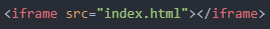

> MEMO: 어제는 전공 공부를 하다 보니 리뷰를 쓸 시간이 많지 않아서 지금까지 배운 내용들 복습했습니다.
1. 오늘의 목표
- 화면 크기 최적화
- 외부 문서 삽입
2. 목표 실천하기
오늘은 가장 먼저 '화면 크기 최적화'에 대해 알아보려고 합니다.
'화면 크기 최적화'는 현재 페이지를 자신이 보고 있는 화면 스케일에 맞게 조정해주는 것이라 생각하면 됩니다.
화면 최적화가 되어 있지 않다면, PC에서는 불편함을 못 느끼겠지만 스마트폰과 같은 작은 화면에서는 불편함을 느낄 수 있습니다.
아래 사진처럼 말이죠.
사진의 아래쪽 빈 공간은 아직 내용을 많이 작성하지 않았기 때문에 많이 허전하지만,
텍스트가 작성된 구역의 우측 공간은 쓸데없이 비어 있습니다.
이런 공간을 채우기 위해 '화면 크기 최적화'를 해주는 것입니다.
방법은 간단합니다.
'meta' 태그를 이용하여 'head' 태그 내부에 아래와 같이 코드를 작성해주면 됩니다.
- 'veiwpoint'는 사용자의 시각적 공간을 제어하는 역할을 합니다.
- 'width=device-width'는 해당 페이지의 폭을 현재 사용하고 있는 기기(대부분 스마트폰)의 화면 폭에 맞춰주는 역할을 합니다.
- 'initial-scale=1.0'은 해당 페이지가 처음 로딩되었을 때 확대/축소 비율을 1.0으로 지정하라는 뜻입니다.
여기선 1.0이므로 확대 또는 축소가 되지 않은 상태를 의미합니다.
따라서 오늘부터는 모바일 화면의 가독성을 위해 해당 코드를 기본적으로 넣어줄 것입니다.
사실 이 페이지는 이미 해당 코드가 적용된 상태입니다.
두 번째 목표는 '외부 문서 삽입'입니다.
'iframe' 태그를 이용하여 외부 문서를 삽입할 수 있습니다.
아래와 같이 태그를 작성합니다.

그럼 위와 같이 다른 페이지를 이 페이지에 로딩할 수 있게 됩니다.
그런데 크기가 너무 작네요.
이럴 땐 'width' 속성과 'height' 속성으로 크기를 조정하면 됩니다.
아래와 같이 크기를 맞춰주었습니다.
물론 %로 비율을 맞춰도 괜찮습니다.
그런데, 이 태그는 보안이 매우 중요합니다.
신뢰할 수 없는 사이트에서 악성코드 같은 것을 포함하고 있다면, 삽입된 외부소스에서 악성코드가 실행될 수 있기 때문입니다.
이런 문제를 해소하기 위해서 HTML의 최신 버전인 HTML5에서는 sandbox라는 것을 도입했습니다.
바로, 삽입된 페이지에서 실행되도록 설정된 기능들이 실행되지 않도록 하는 방법입니다.
코드를 다음과 같이 작성합니다.
저 위에 삽입된 페이지에선 링크끼리 서로 연결되었지만, sandbox가 적용된 이 페이지는 링크를 눌러도 연결이 안 되는 것을 알 수 있습니다.
즉, '그냥 눈으로만 봐라'라고 하는 것과 같죠.
이번에는 유튜브 영상을 삽입해보려고 합니다.
삽입하고자 하는 유튜브 영상을 클릭합니다.
저는 서울 야경 영상을 선택했습니다.
유튜브 화면을 보시면 '공유' 버튼이 있습니다.
이 버튼을 클릭하면 다음과 같은 창이 나옵니다.
'퍼가기' 버튼을 클릭합니다.
그럼 다음과 같은 창이 나옵니다.
우측을 보시면 소스코드가 나옵니다.
이 소스코드를 복사해서 붙여넣기 해보겠습니다.
그럼 다음과 같이 유튜브 영상이 삽입됩니다.
아래는 해당 소스코드입니다.
- 'frameborder'는 삽입된 영상의 테두리 두께를 의미하며, 0과 1만을 지원합니다.
- 'accelerometer'는 가속도 센서를 지원하는 기기에서 가로-세로 자동 전환 기능을 제공한다는 의미입니다.
- 'autoplay'는 자동 재생을 지원한다는 의미로, URL 뒤에 '?autoplay=1'을 추가로 작성해야 사용할 수 있는 기능입니다.
- 'clipboard-write'는 클립보드 쓰기 기능을 지원한다는 의미입니다.
- 'encrypted-media'는 암호화된 영상 재생을 지원한다는 의미입니다.
- 'gyroscope'는 잘 모르겠습니다 ㅠㅠ
- 'picture-in-picture'는 pip 모드를 지원한다는 의미입니다.
- 'allowfullscreen'은 전체화면 버튼을 활성화한다는 의미입니다.
사실 'src' 속성까지만 작성해도 영상 삽입이 가능합니다.
아, 가끔 아래와 같은 화면이 나올 때도 있습니다.
이는 채널 주인이 '퍼가기' 설정을 해놓지 않았기 때문입니다.